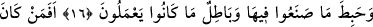
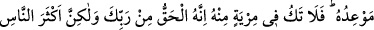
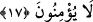

DÜNYA HAYATINI VE
SÜSÜNÜ İSTEYENLER
15. Kim dünya hayatını ve süsünü isterse onlara oradaki işlerinin karşılığını tam
olarak veririz ve onlar orada hiçbir eksikliğe uğratılmazlar.
16. İşte âhirette onlara ateşten başka bir şey yoktur ve yaptıklarının hepsi orada
boşa çıkmıştır, işleri hep bâtıl olmuştur.
17. Rabb’i tarafından (gelmiş) açık bir delile dayanan ve onu Rabb’inden bir
şahidin izlediği, ayrıca kendisinden önce bir önder ve bir rahmet olarak Musa’nın
Kitab’ı (elinde) bulunan kimse (inkârcılar gibi) midir? İşte onlar ona (Kur’an’a)
îmân ederler. Zümrelerden hangisi onu inkâr ederse işte cehennem ateşi onun
varacağı yerdir. Bundan şüphen olmasın; zira bu, senin Rabb’in tarafından
bildirilmiş gerçektir; fakat insanların çoğu inanmazlar.
“Kim” himmetinin alçak olması sebebiyle yaptığı iyi ve güzel amellerle Allah
Teâlâ’nın rızâsını değil de “dünya hayâtını ve süsünü” yani dünya hayatını
güzelleştirip süsleyen sağlık, emniyet, rızık bolluğu, evlât çokluğu, baş olmak ve buna
benzer şeyleri “isterse…” Bu istemeden maksad kalbî irâde değil bu amelleri yaparken
hâsıl olan istemedir. Çünkü Allah Teâlâ şöyle buyuruyor: “onlara oradaki işlerinin
karşılığını tam olarak veririz” dünya hayatındaki amellerinin semerelerini kendilerine
tam olarak ulaştırırız.
“İşler/ameller”den maksad, hepsinin ameli değildir. Çünkü her isteyen, istediği şeye
ulaşamaz. Bu ilâhî meşîete bağlıdır. Nitekim Allah Teâlâ şöyle buyurur: “Her kim bu
çarçabuk geçen dünyayı dilerse ona (yâni), dilediğimize dilediğimiz kadarını
dünyada hemen veririz.” (el-İsrâ, 17/18) Yine “İşler” ile bütün ameller de
kastedilmemektedir. Bilakis ecir ve karşılık almayı gerektiren ameller kastedilmektedir.